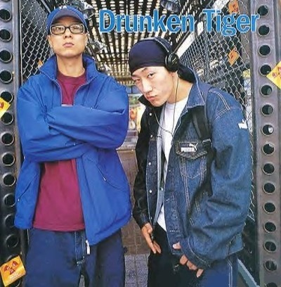

드렁큰 타이거(영어: Drunken Tiger)는 1990년대 초에서 대한민국에서 결성하여 1999년부터 2018년까지 활동한 대한민국의 힙합 래퍼 그룹이다. DJ 샤인의 탈퇴 이후 타이거 JK가 공연할 때 늘 백업으로 비지와 팔로알토가 참여하였다. 드렁큰 타이거는 원래 1992년 로스앤젤레스 폭동 직후 미국 웨스트 코스트 L.A의 랩의 뿌리 힙합 축제에서 데뷔, 고등학교 시절부터 힙합 방송을 비롯한 크고 작은 무대에서 랩 실력을 뽐내던 타이거 JK에 의해 시작되어 힙합계의 여러 동료들이 참여하는 타이거 클랜을 가리키도 하며 한국에서의 첫 활동은 타이거 JK를 주축으로 미국의 Sucram이 멤버로 활동하였고, 1999년, 두 번째 귀국부턴 타이거 JK를 주축으로 DJ 샤인이 합류해 활동하였다. 2005년, 1집부터 5집 음반까지 활동한 DJ 샤인은 탈퇴 후, 타이거 클랜은 타이거 JK를 주축으로 필리핀계 Roscoe Umali를 비롯해, Xrae 그리고 한국인 DJ James Jhig, Mango Fresh, MQ, Kevin gunheehan, David Kempo Han 으로 구성되어 있다. 한국의 정통 힙합 전파에 공헌해 온 드렁큰 타이거의 힙합 운동은 더 크게 무브먼트 (Movement) 크루로 범위를 넓혀왔으며, 현재 한국에서 가장 많은 힙합 작품을 발표한 아티스트이며 한국대중음악상, 골든디스크, MKMF를 비롯한 각종 상을 수상하였다. 2017년 1월 2일, 마지막 정규 앨범 발매를 끝으로 해체를 결정했다. 2018년 11월 14일, 마지막 정규 앨범 《Drunken Tiger X : Rebirth Of Tiger JK》를 발매하였으며, 이를 끝으로 드렁큰 타이거의 활동이 20년 만에 마무리 되었다. 2019년 5월 16일, "I Love You Too (Feat. 윤미래)" 뮤직비디오가 추가로 공개되었다.
